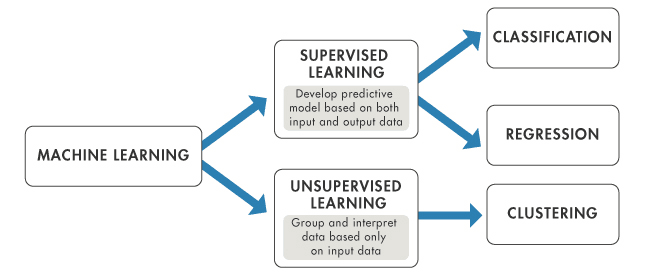

Conference paper; Exploring AI and Machine Learning
Abstract
This paper presents a novel adaptive active learning strategy. The most accurate classification model from a heterogeneous
classifier pool is selected at each learning epoch. Our goal is to achieve greater incremental improvement in accuracy, compared
to using a single type of classification model throughout the process. The strategy is evaluated on benchmark data sets.
We further consider an application to texture classification problems in sonar mosaic imagery and compare it with non-adaptive
active learning and traditional machine learning approaches. Our results show that...We conclude that...
Introduction
In today’s technologically advancing era, AI and machine learning are transforming almost every field, from healthcare to
manufacturing (Why is AI Important? 2021). But what exactly is AI, and how is it different from machine learning? As
defined by McCarthy, AI is the science of engineering intelligent machines that are able to perform human-like cognitive
functions (McCarthy, 2007). While machine learning, a subset AI, focuses on teaching it to learn independently from data patterns
(Machine learning: What it is and why it matters). It is machine learning that allows AI to excel in sectors like healthcare and
banking (Why is AI important? 2021). In this article, we will dive into how AI learns and develops from data, and the role machine
learning plays in this process.
Analysis and discussion
As shown in Negnevitsky’s book, the science of Artificial Intelligence has had quite a history over the decades. Mainly being founded by
three generations of researchers. The first was Alan Turing, who proposed the ‘Turing test’ as a standard to determine whether an
artificial computer is thinking (Copeland). Then came McCulloch whose research on the central nervous system resulted in a model of
neurons in the brain – the first major contribution to AI, and later John Von Neumann who helped build the first neural network computer
(Negnevitsky, 2020).
AI learns using three main machine learning algorithms: supervised, unsupervised, and reinforcement learning (Anirudh V K, 2022).
In basic terms, supervised learning algorithms train machines to learn patterns and relationships between input and output data,
using example labelled datasets (Ali, 2022). The machine learning algorithm is given a known dataset and must figure out a method
to link the given inputs and outputs by spotting patterns, learning from observations and making predictions (Wakefield). For this
reason, it is quite like how humans learn from experience. Since a lot of human effort is required to label the data fed to these
algorithms, they are termed ‘Supervised Learning’ (Anirudh V K, 2022). Supervised learning algorithms can be further separated into
classification and regression.
Classification is one of the most widely used forms of machine learning (Murphy, 2021). It is a form of pattern recognition where the
program must draw conclusions from already processed values to then discover the same pattern (Banoula, 2023). On the other hand,
regression is a predictive modelling algorithm (Castillo, 2023). In regression, algorithms learn to predict continuous values from
data – therefore it can be used to predict sales, salary, weight etc (Ali, 2022). Though similar to classification, regression focuses
on forecasting and predicting continuous outcomes whereas classification focuses on categorising based off already existing data.
Unsupervised learning is a type of algorithm where only output data is provided (Murphy, 2021). With no human operator/instruction
provided, the machine must figure out correlations and relationships from the available data on its own and arrange it into an
organised format (Wakefield). This method of learning is more reminiscent of human learning, and more widely applicable than
supervised learning as a human is not required to manually label the dataset (Murphy, 2021). The three main examples consist
of: Clustering, Association mining and Dimensionality reduction (Pykes, 2023).
Clustering algorithms group untagged data based on both similarities and differences (Pykes, 2023). The importance of clustering lies
in its ability to discover natural groups in labelled data, which the clustering algorithm does by having certain assumptions about
how similar data points are. There is not a set criterion in clustering, it all depends on what criteria the specific users themselves
are looking for in a cluster (Priy, 2023). This technique is used by Netflix to recommend movies to users based on their watch history
(Clustering in machine learning – javatpoint). Clustering is similar to classification; however, it does not require a labelled dataset.
Association rule mining as a data technique aims to uncover patterns, relationships, and correlations by using a kind of interest meter
to uncover important rules within a dataset (Pykes, 2023). It presents these associations in the form of if-then rules (Noor, 2023).
A common use is to find items that customers commonly purchase to boost sales and exposure (Noor, 2023).
Algorithms carrying out dimensionality reduction are tasked with changing data from having lots of information (“high-dimensional space”)
to having less information – while keeping the important parts of the original data (Pykes, 2023). This is usually carried out when
analysing data; data with more than three characteristics is hard to visualise, therefore this technique makes the dataset simpler -
making it easier to create models (Pykes, 2023). This is also done because the performance of machine learning algorithms degrades with
too many input variables (Brownlee, 2020). Cluster-finding algorithms uncover natural groups in unlabelled data, giving each data point a
tag, meanwhile association mining algorithms find rules that reference connections between data points (Alloghani et al., 1970).
Reinforcement learning is a machine learning algorithm that allows AI to learn from its own mistakes, through trial and error using the
positive or negative feedback received from its actions, with the aim of maximising its reward function (Brooks, 2023). It is a little
like supervised learning in that it uses mapping between input and output, however the difference between the two is tha the data is not
part of the input in this case, (Brooks, 2023). A real-world example is ‘AlphaZero’, a system that mastered ‘Go’ from scratch and beat
the world champion (Silver et al., 2018). While conventional algorithms break a problem into subparts, reinforcement learning focuses on
the problem as a whole to solve the issue

Conclusion
In conclusion, AI and machine learning have evolved drastically over the decades, starting from Turing to Von Neumann, to machine
learning branching off into supervised, unsupervised, and reinforcement learning, each with different focuses. While supervised
learning replicates how humans learn from experience, unsupervised learning figures out hidden structures in the data, and
reinforcement learning uses experimental learning methods that closely mimic our intelligence. Together, these algorithms foreshadow
a future where they dramatically reshape all industries.